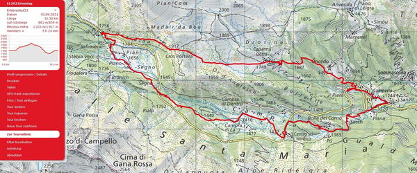
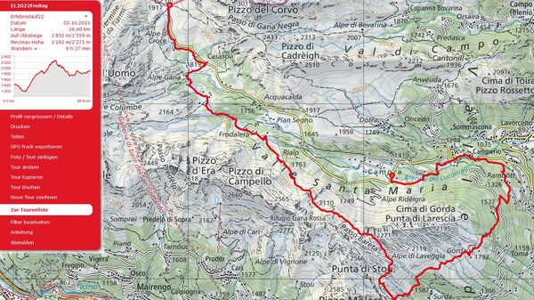
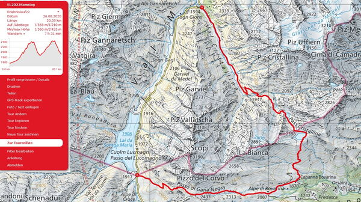
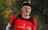

Erlebnislauf 3 Tage
Vom 02. bis 04. September laufen wir in 3 Tagen auf herrlichen Trails
Grenzgebiet Lukmanierpass GR - Valle Santa Maria TI
Wir laufen in 3 Gruppen nach Stärkeklassen. Trailrunning im Wohlfühlbereich. Das Tempo passen wir dem Gelände an und geniessen dabei die schöne Landschaft. Wir haben auch Zeit um Pausen einzulegen. Ist das Gelände eben oder sogar abfallend so sind wir im Laufschritt unterwegs. Steilere Aufwärtspassagen werden auch in zügigem Wanderschritt bewältigt.
Wir logieren in der wunderschönen Campra Lodge & Spa und geniessen die Vorzüge dieser Hotelunterkunft mit grosszügigen Räumlichkeiten und feiner regionalen Küche. Am Abend geniessen wir ein 3-Gang Menu und am Morgen ein ausgewogenes Frühstück.
Campra - Pian Segno - Camperio - Campra

Freitag, 02. September
Campra - Pian Segno - Capanna Dötra - Camperio - Campra
16.3 Km +/- 850 hm Daten.gpx / zur Strecke auf SchweizMobil
Lange Strecke 23.6 Km +/-1500 hm Daten.gpx / zur Lange Strecke auf SchweizMobil
Der Treffpunkt zum Erlebnislauf befindet sich um 10:00 in Campra Alpine Lodge & Spa. Anreise mit Auto Individuelle oder Fahrgemeinschaft nach Campra zum Start der ersten Etappe. Nach der Gruppeneinteilung nach Stärkeklasse laufen wir in 3 Gruppen mit je 2 ortskundigen Leitern los. Wir laufen über die Hochebene wo im Winter die Langläufer ihre Runden ziehen. Dann führt uns ein schöner Trail dem Brenno del Lucomagno entlang, hoch zum Punkt Böcc di Scar 1635 m. Weiter über die Alpwiesen zum Centro Pro Natura Lucomagno. Auf einem mega schönen Trail erreichen wir den Aussichtspunkt Croce Portera 1917 m, hier laufen die Schnellen links auf eine längere Strecke. Alle andern laufen nach Dötra wo man die herrliche Bergwelt Adula erblickt. Bei der Capanna Dötra geht’s durchs Val Bogin steil hinunter nach Piera, über Camperio die wunderschöne Schlucht hoch nach Campra zurück. Wir verbringen zwei Nächte in Campra Alpine Lodge & Spa. Die Besprechung der Tour vom zweiten Tag erfolgt nach dem Nachtessen.
Campra - Lucmanierpass

Samstag, 03. September
Campra - Capanna - Alpe di San Martino - Campo Solario - Santa Maria Hospitz
26.0 Km + 1900 / -1400 hm Daten.gpx / zur Strecke auf SchweizMobil
kürzere Variante 24,2 Km +/-1530 hm Daten.gpx / zur Strecke auf SchweizMobil
Der zweite Tag führt uns in Richtung Camperio Ospizio. Dort überqueren wir den Fluss und immer wieder hoch bis nach Gorda di Sopra. Auf und ab über die Alp Nassera, dem Sasso Bianco entlang zur Alp di San Martino und Passo Bareta 2260 m. Bei gutem Wetter herrliche Aussichten hoch über dem Valle Santa Maria. Kurz vor Aquacalda gibt es die Möglichkeit nach Campra di La zurück nach Campra zu laufen, oder zum Ziel der der Tour auf dem Passo del Lucomagno. Das Ticino Ticket erlaubt uns freie Fahrt zurück nach Campra. Wir verbringen zwei Nächte in Campra Alpine Lodge & Spa. Die Besprechung der Tour vom dritten Tag erfolgt nach dem Nachtessen.
Val Cristallina - Lucmanierpass

Sonntag, 04. September
Sogn Gions - Val Cristallina - Pass Cristallina - Lago Retico - Alpe di Bovarina - Passo di Gana Negra - Santa Maria Hospezi
20 Km +1500 hm / -1200 hm Daten.gpx / zur Strecke auf SchweizMobil
zur Langen Strecke mit 23 Km +1800 hm/-1500hm Daten.gpx / Strecke auf SchweizMobil
Die Königsetappe ist nicht die Längste aber eine der schönsten die ich kenne! Nach dem Frühstück packen wir zusammen und fahren mit Autos hoch zum Lukmanierpass. Mit dem Postauto geht es dann nach Pardatsch. In drei Gruppen nach Stärkeklasse laufen wir bei der Haltestelle Pardatsch los. Wir laufen das Val Cristallina hoch am Lajets-See vorbei zum Cristallina Pass 2399 m. Dann führt uns der Weg am Lago Retico vorbei, bevor wir dem steilen anspruchsvollen Trail hinunter nach Capanna Bovarina 1870 m folgen. Nach der unbedingten Einkehrmöglichkeit auf der schönen Terrasse der Capanna trennt sich die Gruppe 1 bis zur Alpe di Bovarina. Die nächsten Kilometer bis zum Passo di Gana Negra hoch, und dann hinunter zum Passo del Lucomagno laufen wir alle gleich und erreichen da das Ziel des 3tägigen Erlebnislaufes. Nach einer Stärkung heisst es dann Abschied nehmen mit vielen Eindrücken der drei Tage Trailrunning.
Leistungen
Folgende Leistungen sind im Teilnehmerbeitrag inbegriffen ab Campra Freitag bis Sonntag:
- Teilnahme bei Trailrunning in Gruppen mit ortskundigen Laufleitern nach Stärkeklassen ohne Zeitmessung.
- Übernachtungen im Hotel mit Frühstück und Nachtessen Alpine Lodge Campra
- sämtliche Postautofahrten zu den Ausgangspunkten und zurück
- Erinnerungsgeschenk
Treffpunkt am Freitag, 02. Sept. 10.00 Uhr in Campra, Gratisparkplätze vorhanden, Fahrgemeinschaft nach Absprache. Am Sonntag, 04. Sept. endet der Erlebnislauf ca. 15.00 Uhr mit einem Imbiss. Detailinformationen folgen
8 Laufleiter begleiten euch
-

-

-

-

-

-

-

-

Laufleiter Erlebnislauf
- Marco Jäger, Chur
- Petra Jäger, Chur
- Joschi Furrer, Zug
- Brigitte Eggerling, Chur
- Dani Zähner, Felsberg
- Michi Gisler, Bonaduz
- Iris Capatt, Chur
- Martin Lädi Ledermann, Chur
angemeldete Teilnehmer
- Nartano Kottmann
- Ursula Baer
- Irene Breitmaier
- Verena Iseli
- Isabel und Jaqueline Meier
- Petra Bättig
- Corina Müller
- Isabella und Martin Lüönd
- Donat Hunger
- Peter Peter
- Katharina Habermacher
- Adrian Dörig
- Olivia Bissegger
- Andy Schwarz
- Jean-Marie Zogg
- Ruedi Wirz
- Beat Hirt und Ute Zimmermann
- Helene Arquint
- Albert Thöni
- Sebastian Reich